Ziegenmilch
Zur Navigation springen
Zur Suche springen
| Ziegenmilch | ||||||||||||||||||||||||||||||||||
| Die Milch einer Ziege. | ||||||||||||||||||||||||||||||||||
| Information | ||||||||||||||||||||||||||||||||||
| Quelle | Ziege | |||||||||||||||||||||||||||||||||
| Erfahrungspunkte | 5 Hofarbeit EP | |||||||||||||||||||||||||||||||||
| Energie / Gesundheit |
|
|||||||||||||||||||||||||||||||||
|
||||||||||||||||||||||||||||||||||
|
||||||||||||||||||||||||||||||||||
Ziegenmilch ist ein Tierprodukt, das von Ziegen erhalten werden kann.
Als Geschenk
| Reaktionen der Dorfbewohner
| |
|---|---|
| Mag es | 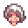 Evelyn • 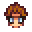 Harvey • 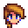 Jodi • 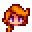 Leah • 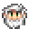 Linus • 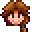 Marnie • 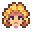 Pam • 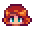 Penny • 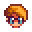 Pierre • 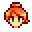 Robin • 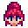 Sandy |
| Neutral | 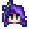 Abigail • 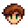 Alex • 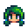 Caroline • 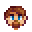 Clint • 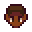 Demetrius • 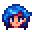 Emily • 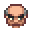 George • 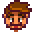 Gus • 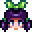 Jas • 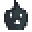 Krobus • 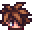 Leo • 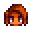 Maru • 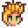 Sam • 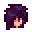 Sebastian • 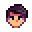 Shane • 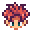 Vincent • 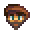 Willy |
| Gefällt nicht | |
| Hasst es | 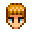 Kent |
Bündel
Ziegenmilch wird in keinem Bündel benötigt.
Handwerkswaren
Ziegenmilch kann zur Herstellung folgender Handwerkswaren verwendet werden. Beachte, dass normale Ziegenmilch immer Ziegenkäse regulärer Qualität produziert. Große Ziegenmilch hingegen produziert immer Ziegenkäse goldener Qualität. Die Qualität der Milch hat keinen Einfluss.
| Bild | Name | Beschreibung | Zutat | Gerät | Zeit | Verkaufspreis | ||||
|---|---|---|---|---|---|---|---|---|---|---|
| Ziegenkäse | Weicher Käse, aus Ziegenmilch gemacht. | Ziegenmilch (1) oder Große Ziegenmilch (1) | Käsepresse | 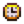 200m (3.33h) |
|
Rezepte
Ziegenmilch wird in keinem Rezept verwendet.
Aufträge
Ziegenmilch wird für keinen Auftrag benötigt.
Verlauf
| Tiere und deren Erzeugnisse | |
|---|---|
| Hühnerstall-Tiere | Dinosaurier (Dinosaurier-Ei) • Ente (Entenei • Entenfeder) • Goldenes Huhn (Gold-Ei) • Hase (Wolle • Hasenpfote) • Huhn (Ei • Großes Ei • Braunes Ei • Großes Braunes Ei) • Schattenhuhn (Schattenei) |
| Stall-Tiere | Kuh (Milch • Große Milch) • Schaf (Wolle) • Schwein (Trüffel) • Strauß (Straußenei) • Ziege (Ziegenmilch • Große Ziegenmilch) |
| Fischteich | Fisch (Fischlaich) |
| Schleim-Stall-Tiere | Schleime (Schleim • Schleimball • Schleim-Ei) |
| Haustiere | Hund • Katze • Pferd |